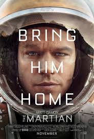

The Martian
2015 IMDB-8.1
During a manned mission to Mars, Astronaut Mark Watney is presumed dead after a fierce storm and left behind by his crew. He must draw courage to find a way that he is alive..
1. Keep Working No Matter What
Even though his situation looks absolutely hopeless, Wattney doesn’t stop working. He starts doing what he can and then he starts making plans and finding ways to do things. Yes, all the plans eventually amalgamate to get him home, but more importantly, the activity keeps his mind busy. So often in life we tend to sit down and feel sorry for ourselves when we’re hit by a situation or tragedy, and this is one of the worst ways we sabotage ourselves. We sit down and worry about it, thinking about every worst possible outcome and eventuality that we could face, pouring every ounce of our energy into creating a deeper and more complex problem with infinitely more pitfalls. Somebody has rightly quoted:-Once you’ve stopped endlessly thinking about the issue, you’ll find it’s a lot easier to start seeing positive solutions and hope in the situation.

2.You Already Have Everything You Need Around You
Once the shock begins to clear and the situation normalizes for Wattney, he begins to make the most amazing plans to escape and move on. Amazingly he’s able to create everything he needs with what is around him, including equipment forgotten and left as lost, like the Mars Rover. Sometimes you will find it in stuff that has been lost and thrown away, but you have everything you need around you. With a little bit of ingenuity and application of your mind, you can find a way to create a solution – you have everything you need. Don’t give up and don’t focus on your limitations and what you don’t have. Only keep looking at what you do have.
3.Have a Plan B, Plan C, Plan D and so on.
Planning is as important in real life as in this movie.You have to ready with other plan so that if one plan fail you can work other plans. It is nontheless to say that your plan A will not always going to work as you wanted it .So to optimize your probability of success you have to ready with other plans.It is going to pay in longer run.
3. You Will Find Successes In Your Trials
Celebrating milestones and little wins is a must if you don’t want to go completely insane through a life trial like this. Even if it’s something you create in your mind or logic your way into, find and celebrate every small success you can, or you will honestly feel like you are on a never-ending uphill treadmill of doom and gloom. There are two moments from the movie that really stand out as Wattney celebrating his wins. The first is when he does a video journal entry speaking about the fact that his Alma Mater sent him information saying that you have legally colonized an area if you’ve grown crops on it. Here he wins first person to colonize Mars.The second instance is towards the end of the movie where Wattney instructs NASA control to call him Captain Blondbeard, because as he explains, he is in international waters and about to commandeer a space ship. Technically therefore, he is a space pirate.

4.Break big tasks into manageable pieces
Watney faces a multitude of life-threatening challenges, but rather than allowing the problems to overwhelm him, he systematically divides them into smaller tasks and then works through them step-by-step-by-step. For example, after inventorying his dwindling food supply, he realizes he must find a way to grow food. Mars, of course, isn’t exactly a farmer’s paradise. Yet despite the lack of water and soil, Watney deploys his expertise as a botanist to concoct water and a fertile growing environment. He then carefully computes how many potatoes he can eat each day to survive, adjusting his calculations as circumstances change. “Do the math” becomes his mantra.
5.Pursue meaningful work
The belief that he is doing important work for a cause larger than himself helps Watney find joy and meaning in an otherwise bleak situation. He exudes great pride in being the first person to do any number of things on Mars. “Everywhere I go, I’m the first,” he exclaims. “The first guy to spend more than 31 sols on Mars. The first guy to grow crops on Mars. First, first, first!” In a particularly heartwarming moment, Watney blurts out: “They say once you grow crops somewhere, you have officially colonized it. So, technically, I colonized Mars. In your face, Neil Armstrong!” Ultimately this “it’s bigger than me” perspective helps Watney come to terms with the very real possibility that he might not make it back home alive. Towards the end of the film, he drafts a note to his parents saying (in essence), “If I die, I’m dying for something big and beautiful. I can live with that.”
5.Dont give hope no matter what the situation you are in.
There’s a moment early in the movie where Wattney has been alone on Mars for three days, with no way to know if anyone knows he’s alive and no way to contact anybody. As he’s standing and watching the sand storm blustering outside he declares, “I will NOT die.” A little later in the movie as he’s making progress on his survival plan he uses two statements: “In your face Neil Armstrong” and “F**k you Mars!” Whatever hope you can find to hold onto, hold onto it. Find a reason to fight, to keep going. With hope you can sustain almost anything. It truly is the light of the human soul.
Most Popular this week

2015 IMDB-7.7
A young programmer is selected to participate in a ground-breaking experiment in synthetic intelligence by evaluating the human qualities of a breath-taking humanoid A.I..
2015 IMDB-8.1
During a manned mission to Mars, Astronaut Mark Watney is presumed dead after a fierce storm and left behind by his crew. He must draw courage to find a way that he is alive..

2014 IMDB-7.3
Navy S.E.A.L. sniper Chris Kyle's pinpoint accuracy saves countless lives on the battlefield and turns him into a legend. Back home to his wife and kids after four tours of duty, however, Chris finds that it is the war he can't leave behind.